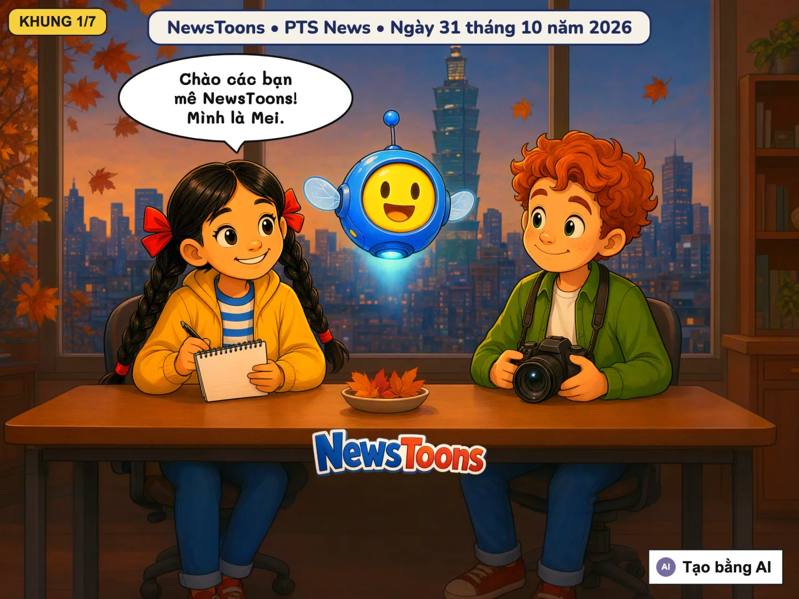
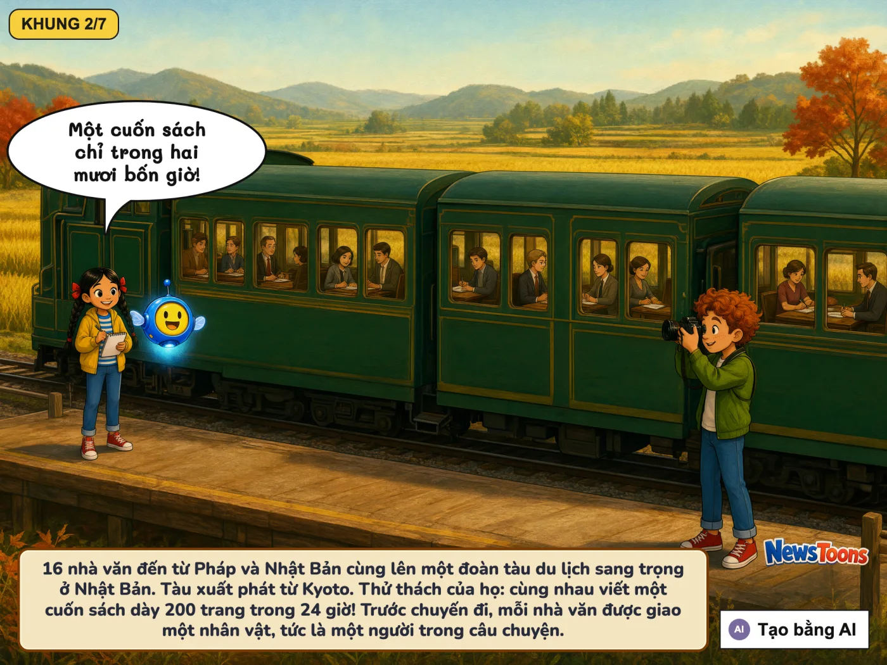
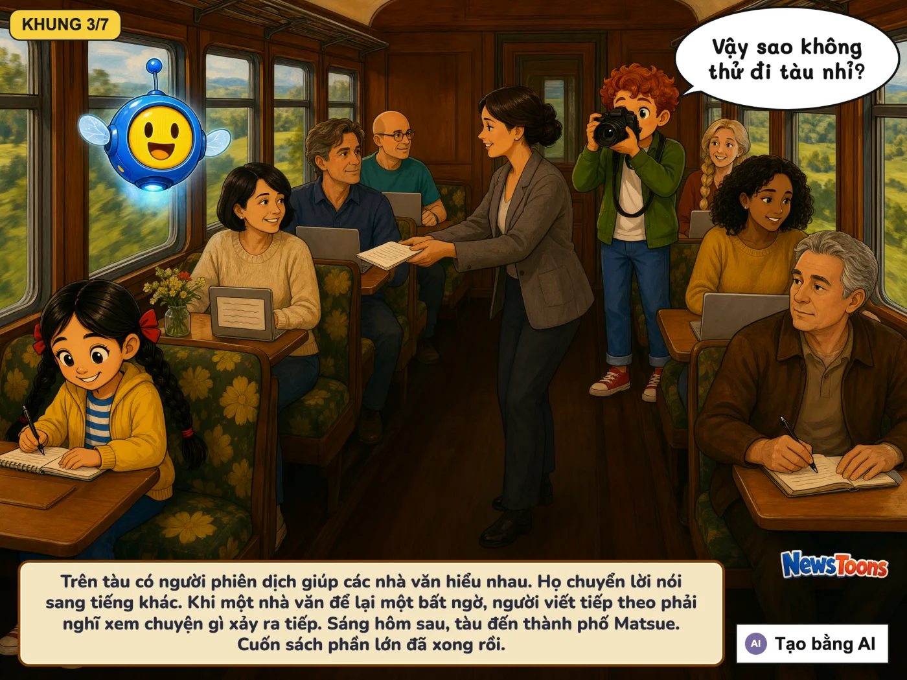
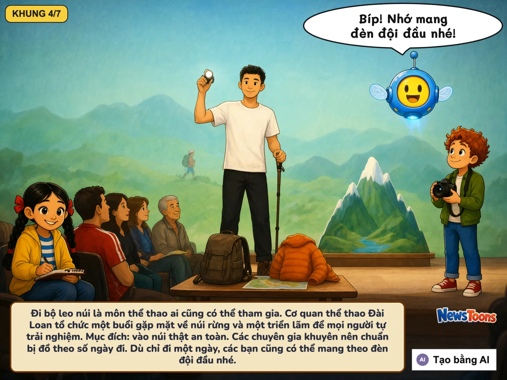
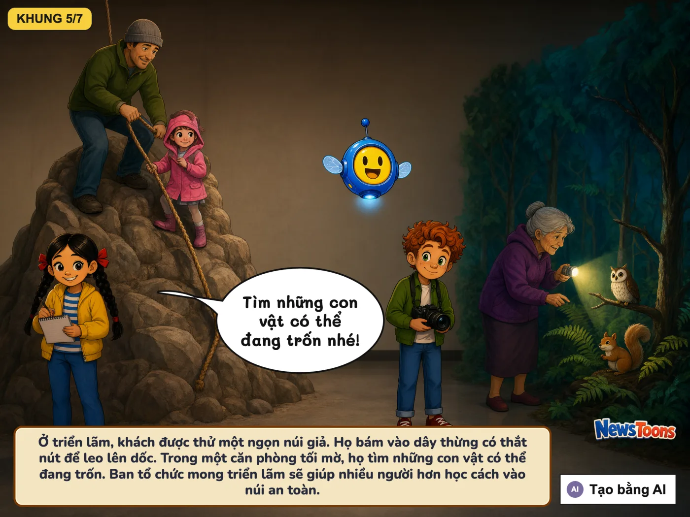
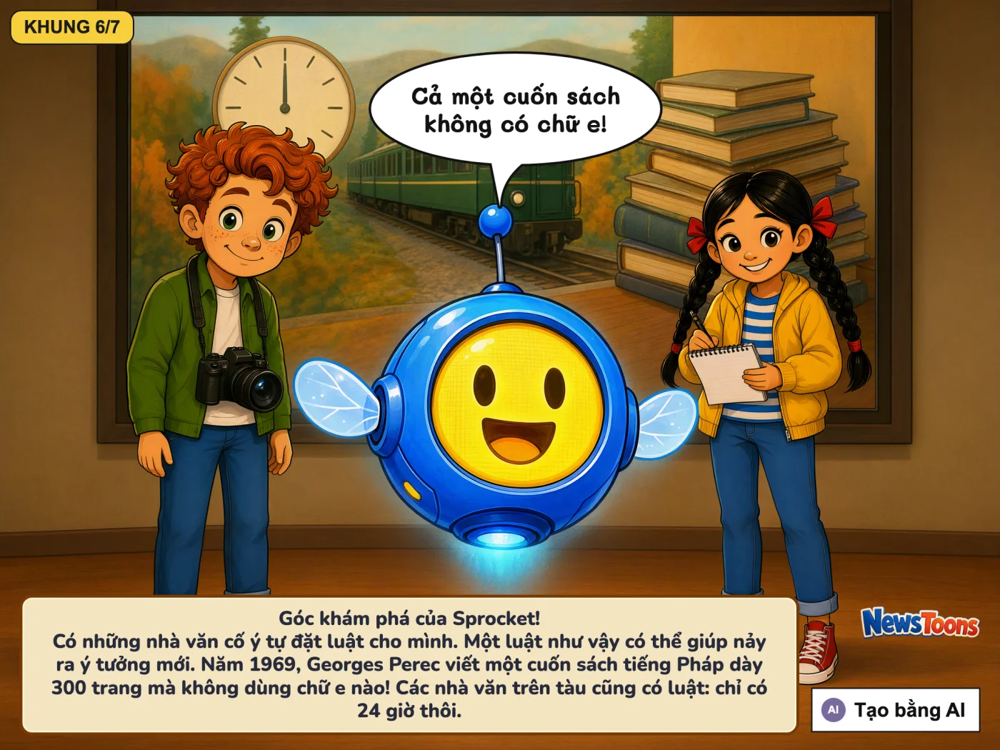
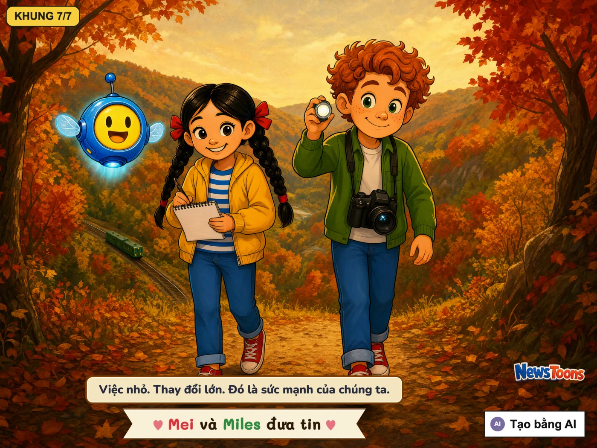

16 nhà văn trên một đoàn tàu và vào núi thật an toàn
🇹🇼 từ Đài Loan · PTS News (公視新聞) · Dịch từ bản gốc: 繁體中文
Một chuyến tàu, một câu chuyệnViết tiếp câu chuyệnĐèn đội đầu, dù chỉ một ngàyNgọn núi để tậpGóc khám phá của Sprocket






